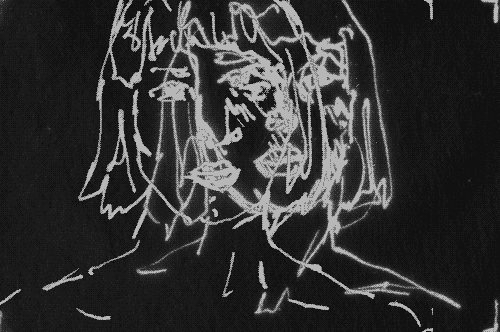
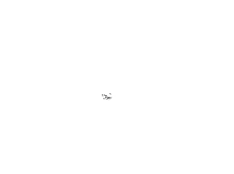

그는 간다.
그가 가고 싶어서 가는 것도 아니요.
내가 보내고 싶어서 보내는 것도 아니지만 그는 간다.
그의 붉은 입술, 흰니, 가는 눈썹이 어여쁜 줄만 알았더니,
구름같은 뒷머리, 실버들같은 허리,
구슬같은 발꿈치가 보다 아름답습니다.
걸음이 걸음보다 멀어지더니 보이려다 말고 말려다 보인다.
사람이 멀어질수록 마음은 가까와지고,
마음이 가까와질수록 사람은 멀어진다.
보이는 듯한 것이 그의 흔드는 수건인가 하였더니,
갈매기보다도 작은 조각 구름이 난다.
한유천 - 그를 보내며
